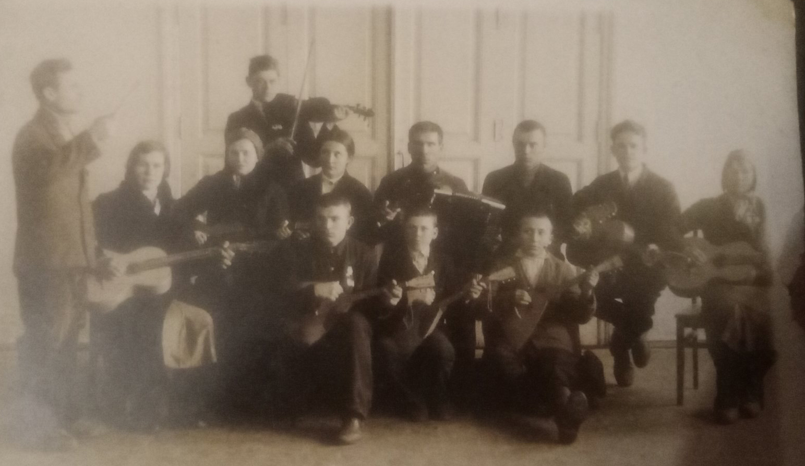
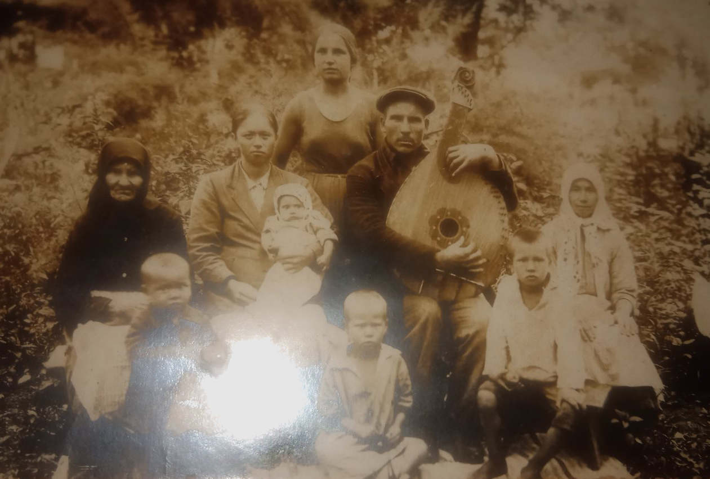
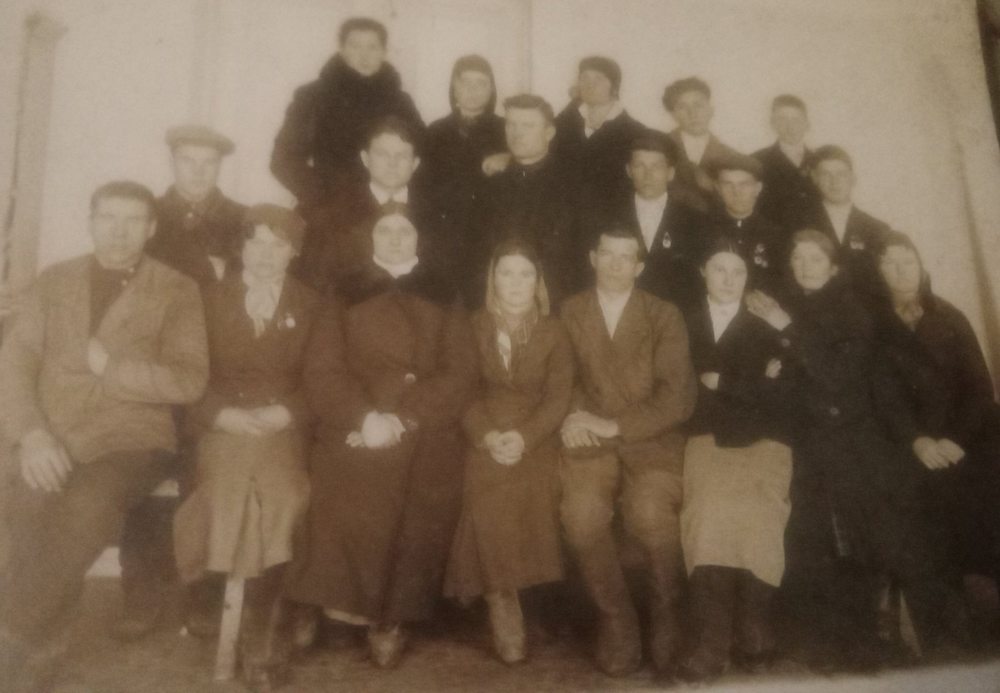

Генеалогічне дерево сім'ї Буцнєвих
Інформація, яка відома на момент 2023 р., про перше покоління сім'ї Буцнєвих
Інформація записана зі спогадів Зубко (Буцнєва) Наталії Тимофіївни та Пономаренко (Буцнєва) Світлани Тимофіївни
Буцнєва Секлета. Травниця. Жила в селі Златоустівка (до 1897 р. село Мерлинове) Дніпропетровськох області (Україна). Вчила дітей збирати лікарські трави в низинах річок та толоках для лікування людей. Було у Секлети та Олександра 17 дітей: Наталья, Оксана, Соня, Яків, Федір, Тимофій, ... Нажаль, весь перелік імен поки що невідомий. Буцнєв Тимофій Олександрович був самим найменшим.
Про смерть Секлети: внучка Зубко (Буцнєва) Наталія Тимофіївна пам'ятає, що на похоронах бабушки Секлети її тримали на руках дуже маленькою і вона дивилася через чиєсь плече. Стояла лавка і на ній стояв гроб. Було полутемно і горіла свічка.
Буцнєв Олександр. Їздив на Полтавщину заробляти гроші, бо не було за що жити. Возив з села Златоустівка на Полтавщину щось на продаж, а звідти віз півмішка пшениці та гроші. В поїзді обікрали, побили і викунули з поїзда, по дорозі додому пішки дуже змерз. Він лежав в лікарні, але не зміг відновитися і помер в саду за хатою від тіфу, побоїв або всього разом.
Малий Григорій та Малая Марія жили в селі Олександрівка, біля Нікополя та Орджонікідзе та мали чотирьох дітей: Євгенія (сама старша донька), Марія, Василь, Степан (самий молодший син). Сестри дуже сильно один одного любили
Інформація, яка відома на момент 2023 р., про друге покоління сім'ї Буцнєвих
Інформація записана зі спогадів Зубко (Буцнєва) Наталії Тимофіївни та Пономаренко (Буцнєва) Світлани Тимофіївни
Буцнєв Тимофій Олександровіч 21.02.1904 - 08.06.1982 (тато Буцнєв Олександр, мама Буцнєва Секлета). Тимофій впав з дерева в 4 роки, дуже сильно пошкодив ногу. Лікарі сказали мамі Секлеті, щоб поїхали і десь вирівняли ножку. Тому Тимофій сердився на маму, що вона, за його думкою, мало приділяла йому увагу і не повезла на вирівнювана ноги у костоправа. Але мама Секлета возила сина Тимофія в пещери Києво-Печерської Лаври, щоб він вилікувався. Пізніше, коли пропонували операцію, то Тимофій відмовлявся, тому що все життя жив з травмою ноги і невідомо було, як би він переніс на той момент операцію. Тимофій був дуже талановитим чоловіком. "Нехай нам Тимошка пограє" - казали люди, коли Тимофій сам підбирав на слух, як грати на гармошці у гармоніста. А потім пізніше почав вчити нотну грамоту. Не любив, коли хтось фальшивив. В сімейному житті Тимофій соромився, що він молодше на 2 місяці за свою жінку. На Новий Рік просив Пономаренко (Буцнєву) Світлану Тимофіївну збирати подарунки для дітей та онуків. Фрукти, солодощі та кожному по 1 рублю. При похороні Тимофія розкидували дуже багато піонів по вулицях в селі Златоустівка. Пішки йшли дуже довгий шлях аж до млина.
Малая Евгенія Григорівна 23.12.1903 - 15.01.1975 (тато Малий Григорій, мама Малая Марія). Мала багато рецептів, дуже смачний хліб пекла. Всі любили її хліб і завжди просили Евгенію його спекти.
Буцнєв Тимофій Олександрович та Буцнєва (Малая) Євгенія Григорівна мали 10 дітей та 17 онуків.
Інформація, яка відома на момент 2023 р., про третє покоління сім'ї Буцнєвих
Інформація записана зі спогадів Зубко (Буцнєва) Наталії Тимофіївни та Пономаренко (Буцнєва) Світлани Тимофіївни
Діти Буцнєва Тимофія та Буцнєвої (Малої) Евгенії
- Надія. Народилася в 1926 р. Померла в віці 4 років від запалення легень. Гуляла постійно на вікні, бо не пускали на вулицю. Була зима, холодно, вона малювала на вікні мальчиками, промерзала і захворіла. Похована в Златоустівці. Хотів Іван Тимофійович, її брат, перезахоронить, але не перепоховати. Але так і не зробили це. Нажаль по старим могилкам поорали поле і стали огороди.
- Іван. 01.09.1927 - 25.08.1994
- Віра. 29.03.1929 - 11.09.1993
- Миколай. 22.02.1931 - 15.02.1996
- Надія. 01.03.1933 - 28.12.1968
- Олександр. 12.08.1937 - 09.02.2020
- Лідія. 02.02.1940
- Наталія. 26.11.1941
- Василь. 28.08.1945 - 23.06.2003
- Світлана. 24.08.1949
Розділ на стадії форматування і редагування
Вера Тимофіївна на залізничній дорозі працювала. Підписувала документти і побачила прізвище Буцнєва. Побачила також прізвище Бузнєва в Рязані або в Воронежі.
Невістка по лінії Тимофія. Буцнєва Олена працювала в стоматології. Світлана Тимофіївна прийшла на прийом, щоб познайомитися з ріднею по батьковій лінії. А вона різко відповіла Світлані Тимофіївні "Вам зуби треба встановити?! Нікого не хочу знати і знаходити рідних!" Купила поліклініку. Але груба дуже з усіма людьми. Так подробиці і невідомі чиєю жінкою вона була.
Двоє дітей було Юля і Валя були у дяди Степи.
Надежжда Бужинська - подруга тети СветиКум Евгенії та Тимофія був Чесновський. Жив в городі. Був дуже високим. Підкидав Світлану Тимофіївну дуже високо, коли вона була дитиною.
Болобине. З рідні Тимофія.
Спогади Буцнєвої Наталії Тимофіївни: гра німців з нею маленькою, як вона бігала від них. А її мама хвилювалася. Німці ще чимось пригощали